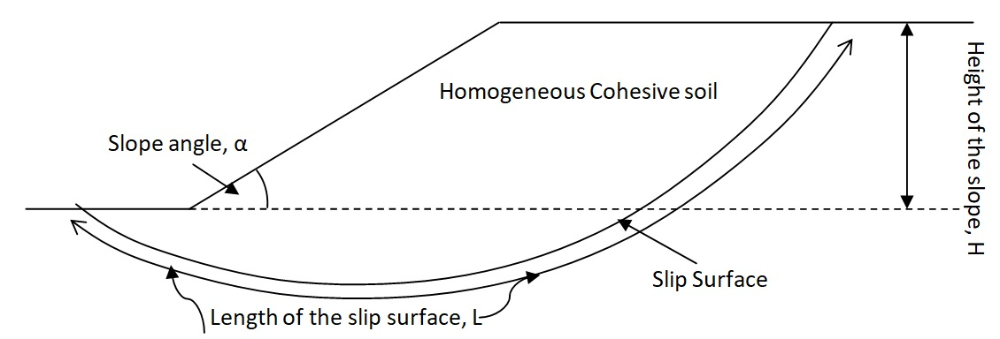
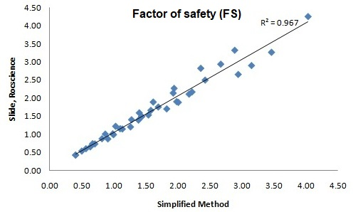

Simplified Slope Stability Assessment for Homogeneous Cohesive Soil
Illustration

Validation with Slide, Rocscience

Limitations
- Cohesion Only: The method is best suited for cohesive soils. When applied to cohesionless soils or soils with significant friction angles, the accuracy may be compromised.
- Homogeneous Material: The method assumes the soil mass is homogeneous. Variations in soil properties or layered systems may not be well-represented using this method.
- Limitation to 2D Analyses: The method is essentially two-dimensional. Real-world slope failures, especially those influenced by geological structures, can be three-dimensional in nature.
- Rigid Body Assumption: The method assumes the sliding mass behaves as a rigid body. This simplification may not represent the actual deformable behavior of the sliding mass, especially for large displacements or complex material behaviors.
- Constant Coefficient of Friction: The method assumes a constant coefficient of friction along the sliding surface, whereas in practice, this coefficient can vary due to changes in pore-water pressures or the dynamic behavior of the soil.
- Doesn't Account for Soil Deformation: The method focuses on rigid sliding without considering the deformation behavior of the soil, which can be significant in many situations.